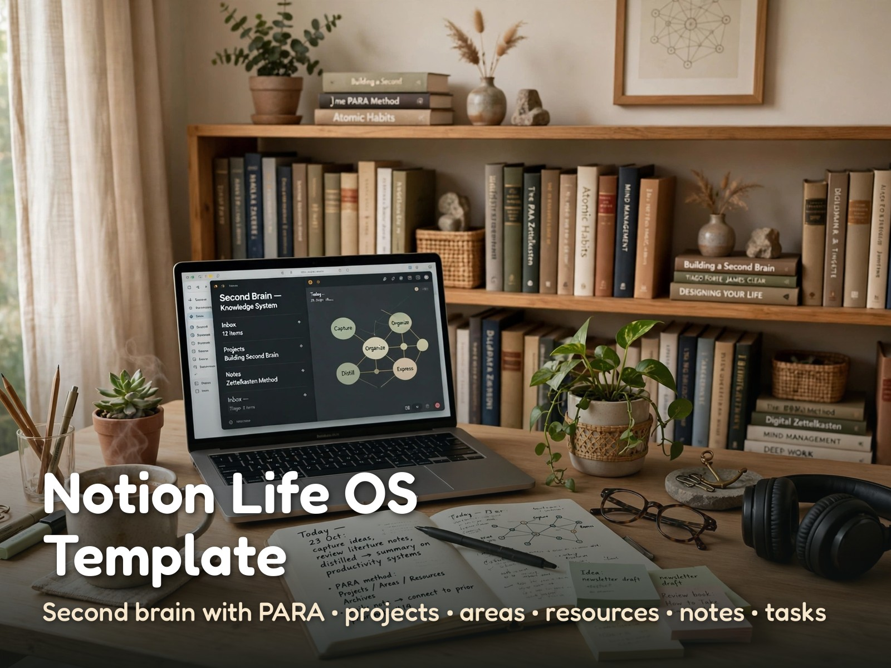

$29 USD — instant download
Notion Life OS Template — Second Brain with PARA: Projects, Areas, Resources, Notes, Tasks & Weekly Review
Get it on GumroadEverything you know is scattered: notes in one app, tasks in another, articles saved nowhere findable, project files in a downloads folder, and the good ideas in your head at 2 a.m. A second brain fails when it is a pile — it works when everything has exactly one place to go and one weekly habit that keeps it honest. Life OS is that place, built on the PARA method — Projects, Areas, Resources, Archives — in the app where your notes already live.
The projects dashboard shows every active project on one page with its outcome, its next actions and its linked notes and resources, so a project is a workspace, not a folder you forget. Areas of responsibility hold the parts of life that never finish — health, finances, work, family, home — each with its own page of standards, projects and reference notes. The resource library database keeps every article, book, video and course worth keeping, tagged by topic and linked to the areas and projects it feeds — findable in seconds, not ‘saved somewhere’. The archive moves finished projects and dead resources out of the active system without deleting them, so your dashboard stays short and your history stays safe.
The task manager is one inbox for every task, each linked to its project or area, with due dates and a today view that shows only what today actually holds. The notes database is one capture inbox for every note, idea and meeting scribble, tagged and linked into projects, areas and resources — capture first, file in the review. The weekly review page is a guided checklist: clear both inboxes, scan every project for its next action, archive what is done, and start Monday with a system that matches reality. The getting-started page sets PARA up in the right order: define your areas, create your current projects, dump everything into the inboxes, and run your first review.
Buy on Gumroad and download the PDF instantly. The PDF contains your template link: open it, click Duplicate in the top-right corner, and the whole system copies into your own Notion workspace â yours to edit, forever. You only need a free Notion account; everything in this template works on Notion's free plan, on phone, tablet and desktop. A getting-started page inside walks you through setup in minutes, so the template is working the same day you buy it. It suits knowledge workers, creators and professionals whose information lives in twelve apps and a downloads folder. Honest note: a second brain is a habit with a template attached, not the other way around. This gives you the structure and the weekly review that keeps it alive; the capturing and reviewing still come from you â about twenty minutes a week, stated here so you know it before you buy, not after.
This is a digital download — no physical item will be shipped. For personal use; please do not redistribute or resell the file.